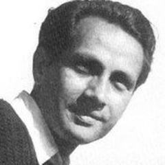

1921'de Lahor'da doğan ve 1997'de Bombay'da ölen Chetan Anand, oyuncu Dev Anand ve yönetmen Vijay Anand'ın da bulunduğu Anand kardeşlerin en büyüğü ve Navketan Films'in kurucu ortağıydı. Gorki'nin The Lower Depths'inden ve Sovyet sinemasından etkilenen toplumsal bir drama olan ilk filmi Neecha Nagar (1946), Altın Palmiye'nin eski adı olan ilk Cannes Grand Prix du Festival'i paylaştı ve bu ödülü kazanan tek Hint filmidir. Taxi Driver'ı (1954) ve savaş filmi Haqeeqat'ı (1964) da yaptı.
Filmografi
- Neecha Nagar (1946)
- Aandhiyan (1952)
- Taxi Driver (1954) (1954)
- Funtoosh (1956)
- Haqeeqat (1964)
- Heer Raanjha (1970)